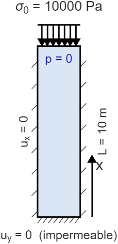

De la ecuación diferencial a la solución numérica: cómo se construye, se acopla y se estabiliza el problema poroelástico de consolidación 1D.
LUCAS PAULOS (63116) · VALENTIN NEME (63091)
Mapa del recorrido
Doce pasos, una sola tubería
Cada paso transforma el problema: física → matemática → discreto → algebraico → solución.
1 Física
→
2 PDE de Biot
→
3 Matrices K,H,Q,S
→
4 Taylor–Hood
→
5 Ensamblaje
→
6 Tiempo
7 Staggered
→
8 Fixed-stress
→
9 CI + convergencia
→
10–12 Resultados
La pregunta que organiza todo: ¿por qué un esquema converge y otro estalla?
Paso 1 · El problema físico
Una columna de suelo que se consolida
Columna de 10 m × 1 m, modelada en 2D plane strain.
En \(t_0=0\) se aplica de golpe \(\sigma_0=10\,000\) Pa → respuesta no drenada.
Cara superior drenante (\(p=0\)); laterales y base selladas y con desplazamiento normal fijo.
El agua escapa lentamente por arriba: la sobrepresión se disipa y la columna asienta.

Geometría, carga y condiciones de borde
Paso 2 · Ecuaciones de gobierno
Dos balances acoplados de Biot
El sólido y el fluido se hablan: la tensión depende de la presión, y el flujo depende de cómo se deforma el sólido.
Balance de momento (sólido)
\[ \nabla\!\cdot\!\boldsymbol\sigma=\mathbf 0,\qquad \boldsymbol\sigma=\mathbb C:\boldsymbol\varepsilon(\mathbf u)-\alpha\,p\,\mathbf I \]
Balance de masa (fluido)
\[ \frac{1}{M}\frac{\partial p}{\partial t}+\alpha\,\nabla\!\cdot\!\frac{\partial\mathbf u}{\partial t}-\nabla\!\cdot\!\Big(\tfrac{k}{\mu_f}\nabla p\Big)=0 \]
El término de acople es \(\alpha\): aparece en ambas ecuaciones. Sin él, serían elasticidad y difusión independientes.
Paso 3 · Discretización por elementos finitos
Cuatro matrices lo contienen todo
La forma débil + interpolación nodal convierten las PDE en un sistema matricial en \(\mathbf u\) y \(\mathbf p\).
Resolverlo de una sola vez es caro y rígido. La idea: iterar sobre los bloques diagonales (mecánico ↔ flujo) hasta converger. Esa elección es lo que define los dos esquemas siguientes.
Sencillo y modular — pero su factor de contracción es \(\rho_{\text{und}}=\alpha^2 M/K_{dr}\). Si \(\rho_{\text{und}}>1\), diverge. Ese es el talón de Aquiles.
Paso 8 · Fixed-stress split
Estabilizar añadiendo una rigidez ficticia
Se agrega \(\mathbf L=(\alpha^2/K_{dr})\!\int N_p^{\top}N_p\,d\Omega\) al paso de flujo, que se resuelve primero: